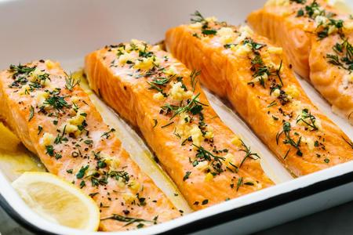

Salmon In The Oven
|  |
Ingredients
- 1 fillet of salmon, skinned (tails are cheapest)
- Any veggies you like: tomatoes, peppers, zucchinis, etc
- Liquid cream
- Black pepper
- Salt
Method
- Put the salmon in an oven dish add chopped veggies and cream on top with salt and pepper
- Grill on a high heat for about 25 min. If it is a thick fillet, it will take longer to cook through, always check if the middle if cooked.
- You can serve it with rice or pasta